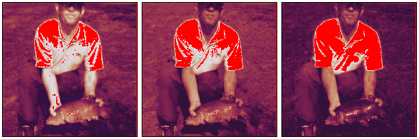
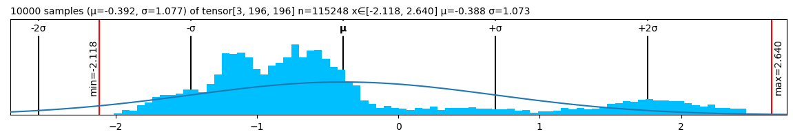
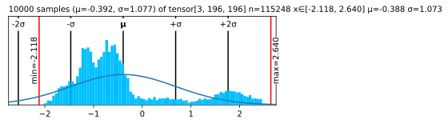

monkey_patch()🙉 Monkey-patching
monkey_patch
monkey_patch (cls=<class 'torch.Tensor'>)
Monkey-patch lovely features into cls
image = torch.load("mysteryman.pt")spicy = image.flatten()[:12].clone()
spicy[0] *= 10000
spicy[1] /= 10000
spicy[2] = float('inf')
spicy[3] = float('-inf')
spicy[4] = float('nan')
spicy = spicy.reshape((2,6))
spicytensor[2, 6] n=12 x∈[-3.541e+03, -3.369e-05] μ=-393.776 σ=1.180e+03 +Inf! -Inf! NaN!
spicy.vtensor[2, 6] n=12 x∈[-3.541e+03, -3.369e-05] μ=-393.776 σ=1.180e+03 +Inf! -Inf! NaN! tensor([[-3.5405e+03, -3.3693e-05, inf, -inf, nan, -4.0543e-01], [-4.2255e-01, -4.9105e-01, -5.0818e-01, -5.5955e-01, -5.4243e-01, -5.0818e-01]])
spicy.ptensor([[-3.5405e+03, -3.3693e-05, inf, -inf, nan,
-4.0543e-01],
[-4.2255e-01, -4.9105e-01, -5.0818e-01, -5.5955e-01, -5.4243e-01,
-5.0818e-01]])image.deepertensor[3, 196, 196] n=115248 x∈[-2.118, 2.640] μ=-0.388 σ=1.073
tensor[196, 196] n=38416 x∈[-2.118, 2.249] μ=-0.324 σ=1.036
tensor[196, 196] n=38416 x∈[-1.966, 2.429] μ=-0.274 σ=0.973
tensor[196, 196] n=38416 x∈[-1.804, 2.640] μ=-0.567 σ=1.178image[:3,:3,:5].deeper(depth=2)tensor[3, 3, 5] n=45 x∈[-1.316, -0.197] μ=-0.593 σ=0.306
tensor[3, 5] n=15 x∈[-0.765, -0.337] μ=-0.492 σ=0.124
tensor[5] x∈[-0.440, -0.337] μ=-0.385 σ=0.041 [-0.354, -0.337, -0.405, -0.440, -0.388]
tensor[5] x∈[-0.662, -0.405] μ=-0.512 σ=0.108 [-0.405, -0.423, -0.491, -0.577, -0.662]
tensor[5] x∈[-0.765, -0.474] μ=-0.580 σ=0.125 [-0.474, -0.474, -0.542, -0.645, -0.765]
tensor[3, 5] n=15 x∈[-0.513, -0.197] μ=-0.321 σ=0.099
tensor[5] x∈[-0.303, -0.197] μ=-0.243 σ=0.055 [-0.197, -0.197, -0.303, -0.303, -0.215]
tensor[5] x∈[-0.408, -0.232] μ=-0.327 σ=0.084 [-0.250, -0.232, -0.338, -0.408, -0.408]
tensor[5] x∈[-0.513, -0.285] μ=-0.394 σ=0.102 [-0.303, -0.285, -0.390, -0.478, -0.513]
tensor[3, 5] n=15 x∈[-1.316, -0.672] μ=-0.964 σ=0.176
tensor[5] x∈[-0.985, -0.672] μ=-0.846 σ=0.123 [-0.672, -0.985, -0.881, -0.776, -0.916]
tensor[5] x∈[-1.212, -0.724] μ=-0.989 σ=0.179 [-0.724, -1.072, -0.968, -0.968, -1.212]
tensor[5] x∈[-1.316, -0.828] μ=-1.058 σ=0.179 [-0.828, -1.125, -1.020, -1.003, -1.316]image.rgbin_stats = ( (0.485, 0.456, 0.406), # mean
(0.229, 0.224, 0.225) ) # std
image.rgb(in_stats)
mean = torch.tensor(in_stats[0])[:,None,None]
std = torch.tensor(in_stats[1])[:,None,None]
(image*std + mean).chans # all pixels in [0, 1] range
(image*0.3+0.5) # Slightly outside of [0, 1] rangetensor[3, 196, 196] n=115248 x∈[-0.135, 1.292] μ=0.384 σ=0.322(image*0.3+0.5).chans # shows clipping (bright blue/red)
image.plt
image.plt(center="mean")
fig, ax = plt.subplots(figsize=(6, 2))
plt.close(fig)
image.plt(ax=ax)
fig